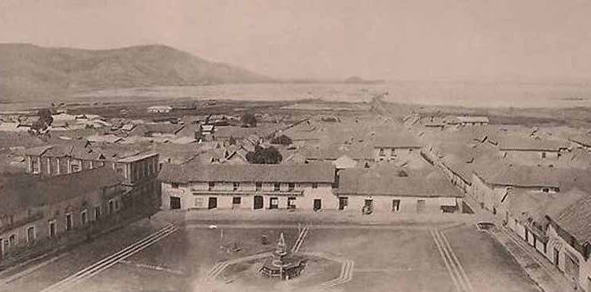

Antes de la llegada de los españoles, la ciudad de Puno, era una aldea, tenía como escenario la Bahía del Lago Titikaka, formaba una población marginal localizada entre los linderos de los territorios de los Kollas (Quechuas) al norte y los Lupacas (Aymaras) al sur.
A fines del Siglo XVI el sur de Puno, estuvo bajo el gobierno de los Lupacas cuyo desarrollo alcanzó grandes avances en la agricultura, ganadería, organización social y cultura. Por otro lado, la parte norte a partir de lo que hoy es Juliaca, se encontraba en poder de los Kollas, cuyo dominio se proyectaba desde los linderos del actual Puno, hasta las riberas del Rió Ramis en el lado sur – oriental del Lago Titikaka.
La ciudad de Puno era un modesto poblado de indios hasta que el Virrey Conde de Lemos la convirtió en capital de la provincia de Paucarcolla, el 4 de noviembre de 1668. Paralelamente cambió su antiguo nombre de San Juan Bautista de Puno por el de San Carlos de Puno.
El periodo de paz había terminado en 1781 cuando las revoluciones indias lucharon por su independencia como el dirigido por Tupac Katari. En la guerra de la independencia al principio del siglo XIX Puno se convirtió en una ciudad importante de conexión entre el Perú y Rió de La Plata en Argentina.

Después de la independencia en 1821 Puno fue la escena de la batalla entre Perú y Bolivia, ocupando estos últimos los territorios peruanos hasta Tacna y Moquegua, hasta la firma de la convención de 1847.
El puerto de Puno cuenta con vapores que datan de inicios de la república, los que fueron transportados desde Arica (Chile) hasta el Lago Titikaka para el transporte del minerales y pasajeros desde Bolivia, los mismos que se conservan el día de hoy, así mismo se construyó un ferrocarril que interconecta los departamentos de Cuzco y Arequipa que igualmente siguen en servicio.
A segunda mitad del siglo XVII (1657) el Virrey Conde de Lemos (Pedro Fernández de Castro) traslada el puerto de San Luís de Alba, hacia lo que hoy es Puno y funda la villa de las Inmaculada Concepción y San Carlos de Puno el 9 de noviembre de 1663 y el 4 de noviembre de ese año, lo declara capital de la provincia de Paucarcolla (fecha que se celebra cada año). Luego de haber sofocado un enfrentamiento entre españoles por las famosas minas de Laykacota, las mismas que fueron enterradas y ejecutados los hermanos José y Gaspar Salcedo.
La provincia de Puno fue creada por un decreto del 2 de mayo de 1854 y es capital del departamento hoy Región Puno.